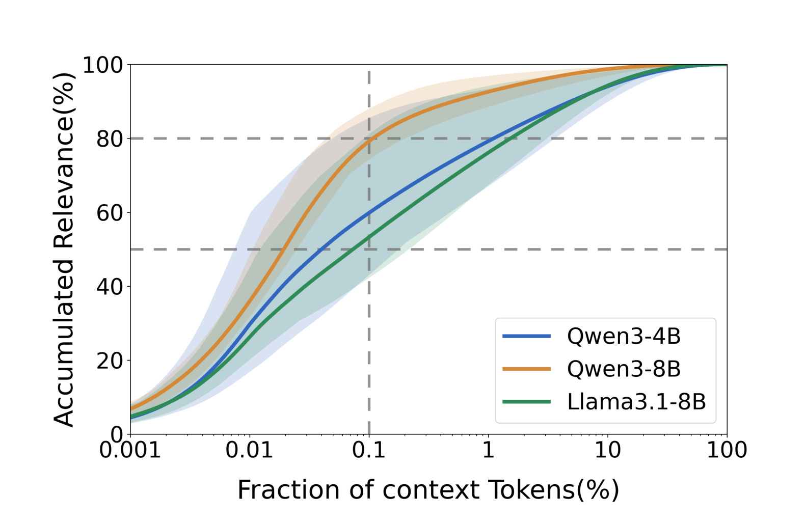
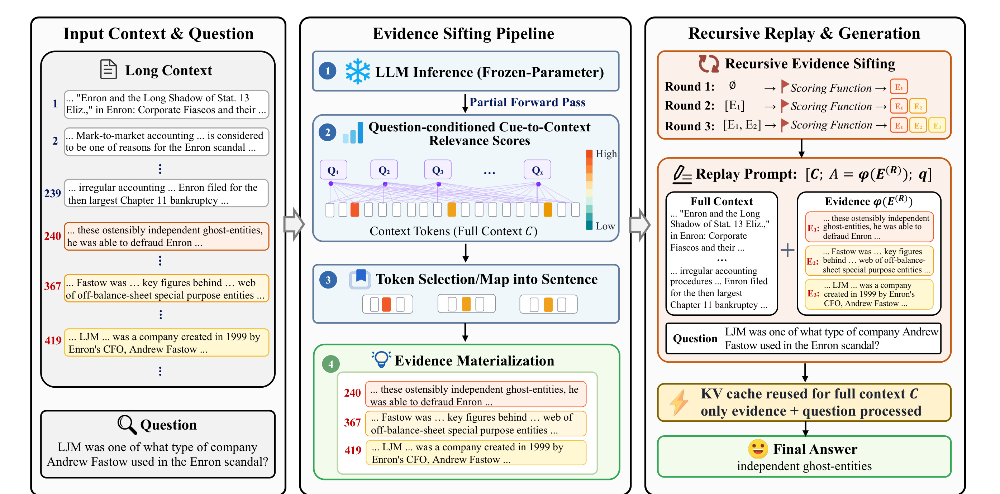
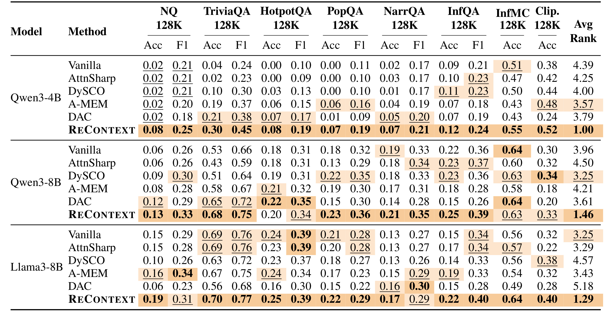
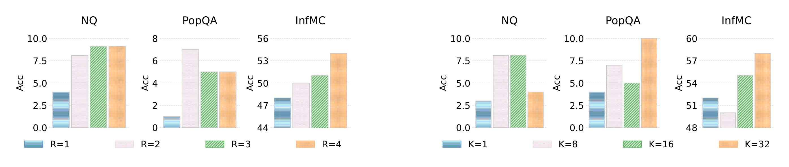
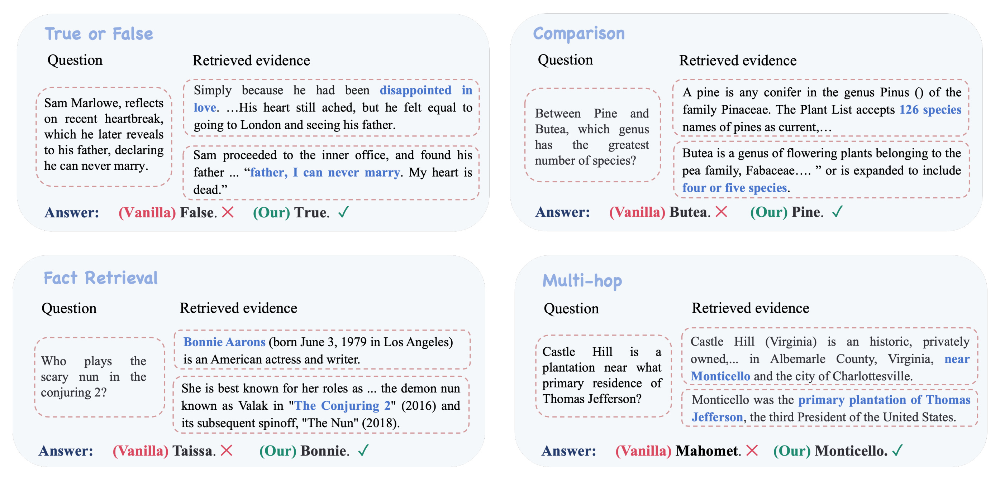
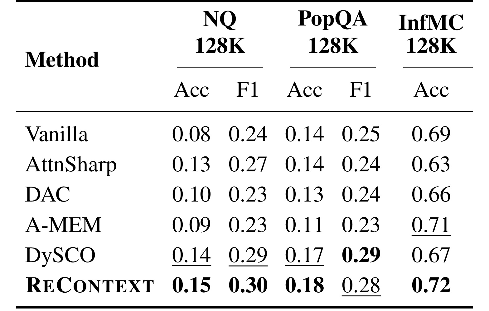
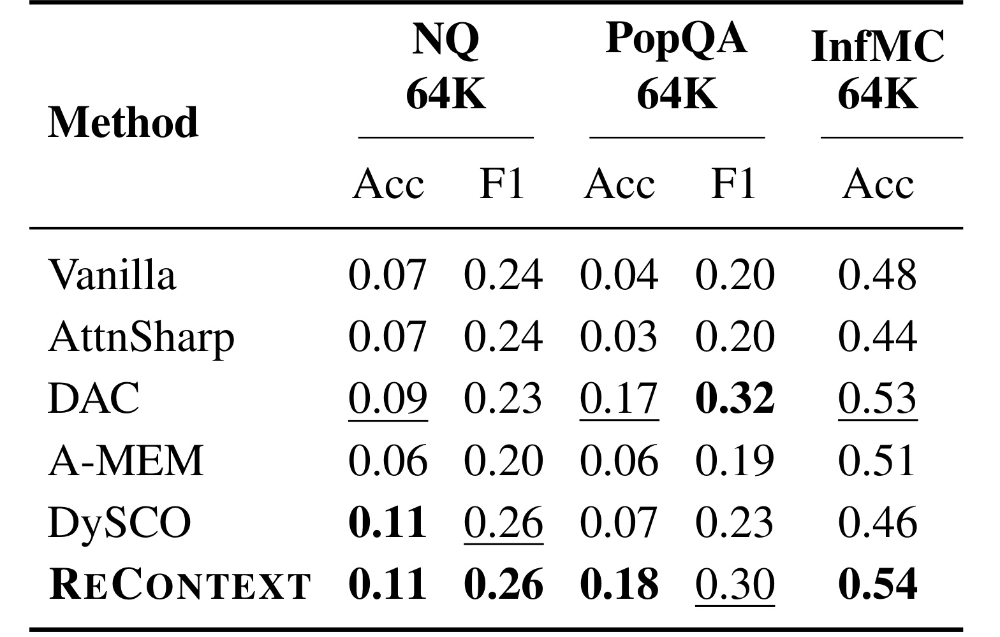
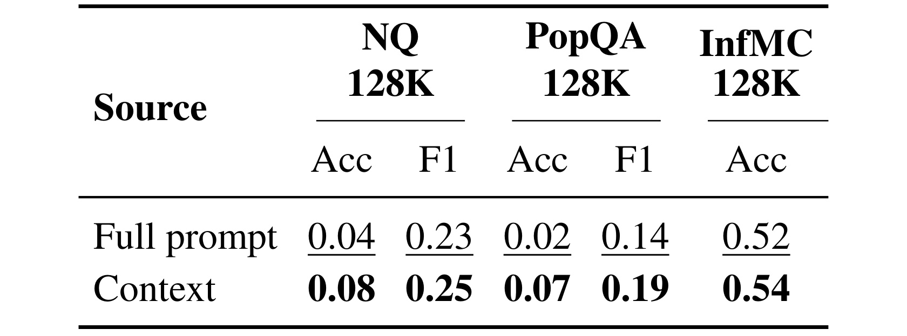
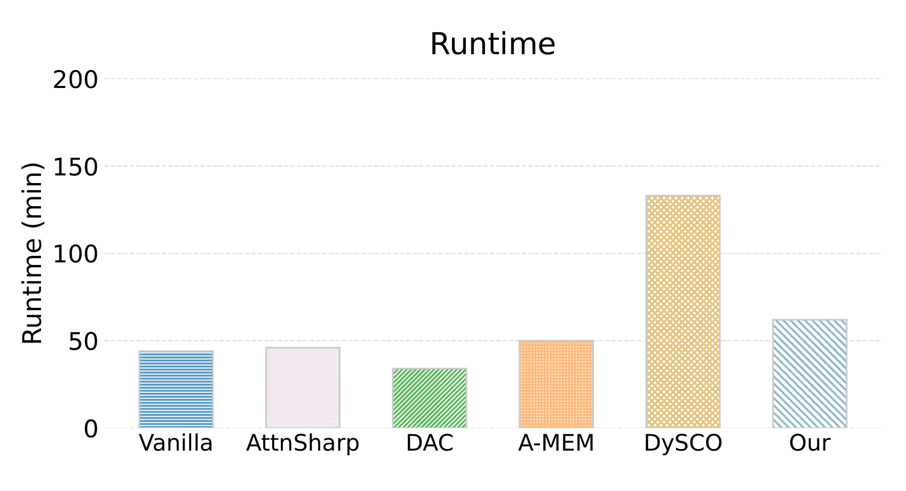

ReContext：用递归证据重放增强长上下文推理
这篇论文讨论的是长上下文 LLM 里一个很实际的缺口：模型已经能接收 128K 级别的上下文，但回答问题时仍可能没有把关键证据真正用起来。论文一作主机构为 University of Illinois Urbana-Champaign，合作作者也来自 UIUC；论文入口为 arXiv:2607.02509。代码状态方面，arXiv 摘要给出作者 GitHub 链接 Yanjun-Zhao/ReContext，本轮只核验到作者声明入口，未做代码复现。
长上下文 LLM 已经能把整篇文档或多文档集合塞进提示词，但它们经常没有使用输入里已经存在的关键证据；真正缺口不只是能访问上下文，而是能否在推理时持续识别、组织和重激活与问题相关的信息。
1. 背景和问题
长上下文模型的第一阶段目标是“放得下”：把一本书、多篇文档、代码仓库或长对话历史放进同一个 prompt，让模型在一个 forward / decode 流程里直接回答问题。ReContext 关注的是第二阶段目标“用得上”。论文在摘要和引言里反复强调，同一个答案所需的证据往往已经在输入里，但模型在生成时没有稳定地把它绑定到问题上。换句话说，context window 解决的是可访问性，long-context reasoning 还需要解决证据利用、证据组织和生成前的证据重激活。
这和 RAG 或 prompt compression 的出发点相近，但约束不同。RAG 往往依赖外部检索器，把原始语料切块后重新召回；压缩方法会过滤或改写上下文，把长输入缩短成更紧凑的视图；注意力干预或 KV-cache 压缩方法则会直接改低层注意力、缓存或解码逻辑。ReContext 的选择更保守：它不训练新模型，不剪掉原始上下文，不让外部 memory 取代 prompt，也不在最终解码时改 attention logits。它把 LLM 内部已经出现的 question-to-context relevance signal 当作候选证据提案，然后把这些提案映射回原文句子，在最终生成前重放一遍。

Figure 1 是论文动机里最关键的量化图。横轴是按相关性分数排序后的 context token 比例，纵轴是累计相关性分数。三条曲线分别对应 Qwen3-4B、Qwen3-8B 和 Llama3.1-8B；虚线标出了 0.1% token 和 50% / 80% 累计相关性这几个锚点。作者想说明的是，在 128K token 的上下文里，和问题高度相关的 token 很少，甚至前 0.1% 约 128 个 token 就能覆盖相当高的 relevance mass。这个现象一方面说明原始长上下文里存在“针”，另一方面也说明模型内部注意力已经给出了可利用的线索。ReContext 的问题定义正是把这类稀疏内部信号变成显式证据池，而不是让最终生成阶段在大量无关 token 中重新碰运气。
如果把这个问题放到工程系统里，它对应的是一个 inference-time harness，而不是新 backbone。harness 的含义是：模型本身不变，但外部推理流程帮它先读、再整理证据、再回答。论文的核心判断是，长上下文失败常常不是因为证据完全不可见，而是证据在生成时没有被重新激活。对问答、claim verification、多跳推理和长文档检索类任务来说，这个差别很重要：只要证据仍在原文中，系统就可以尽量保持 full-context access，同时额外构造一个靠近问题的 evidence scaffold，让答案生成时更容易绑定到正确 span。
这篇论文也有一个隐含边界：它更适合 open-source 或可读内部 attention / relevance signal 的模型。闭源 API 如果只暴露文本输入输出，而不暴露 attention 或等价打分信号，就无法按原方法做 question-conditioned evidence selection。另一个边界是，ReContext 并不声称解决所有长上下文能力问题。它不扩展 context window，不替模型补充缺失知识，也不保证模型一定能做复杂组合推理；它解决的是“相关证据已经在输入中，但生成阶段没有充分利用”的子问题。因此这篇论文更适合被看成一种长上下文推理链路的诊断与修补方法，而不是新的通用模型能力声明。
2. 方法
2.1 用内部注意力把问题变成证据线索
ReContext 的第一步是把当前 prompt 里的问题侧 token 当成 cue。设当前 prompt 为 $x$，其中 $I_x$ 是所有 token 位置，$I_C \subseteq I_x$ 是原始上下文 $C$ 对应的位置。论文取 prompt 后缀中最多 $w=8$ 个 cue token，记为 $Q(x)=(t_1,\ldots,t_L)$。这些 cue 来自问题或答案格式附近，因此它们对“当前要回答什么”有条件化作用。模型做一次 read pass 后，作者在选定的 layer-head 集合 $H$ 上聚合 cue token 指向 context token 的 attention：
符号解释：$t_u$ 是第 $u$ 个 cue token，$i$ 是 prompt 中的候选 token 位置，$A_{t_u,i}^{(l,h)}$ 是第 $l$ 层第 $h$ 个 head 中 cue token 对位置 $i$ 的 attention weight，$H$ 是用于读出相关性的 head 集合。这个公式不是把 attention 当成因果解释，而是把它当成廉价 proposal signal：如果多个问题侧 cue 都看向某些 context token，这些 token 就值得被送入下一步证据筛选。不同 cue 的分数会被累积成最终相关性 $r_i$，然后只在原始上下文 token 位置 $I_C$ 内选出 top-K；这个限制会在后续 Table 4 的消融中被单独验证。
符号解释：$r_i$ 是位置 $i$ 的综合相关性分数，$K$ 是 evidence-token budget，$P$ 是被选中的 context token 位置集合。这里有一个重要设计：候选证据必须来自原始上下文，而不是后续 replay scaffold。这样做可以避免 replay 里的文本继续自我强化，保持证据可追溯到原文。ReContext 的 relevance 不是外部 retriever 给的相似度，而是模型读当前问题时暴露出的内部 cue-to-context 关联。
2.2 从 token 提案到可读证据池
只拿 token 位置不能直接帮助最终回答，因为一个 token 可能只是人名、年份或半个谓词。论文因此把 token-level proposal 映射回句子或局部 span。设原始上下文被切成有序 span 序列 $S_C=(s_1,\ldots,s_N)$，$\operatorname{pos}(s_n)$ 表示第 $n$ 个 span 覆盖的 token 位置。证据池定义为所有与 $P$ 有交集的 span：
符号解释：$E$ 是按原文顺序排列的证据 span 列表，$s_n$ 是原始上下文中的句子或局部片段，$P$ 是上一步选出的相关 token 位置。这个公式体现了 materialization 的含义：证据不是模型重新总结出来的，而是从原始 prompt 中复制出来的可读文本。完成 span materialization 后，单轮 replay 不再让模型从零遍历全部上下文，而是在保留原文的同时，把证据池放到问题附近，prompt 写成：
符号解释：$C$ 是完整原始上下文，$\phi(E)$ 是证据池的文本化 replay 格式，$q$ 是问题，$M$ 是冻结的 backbone LLM，$y$ 是最终答案。这个设计的重点是“emphasis rather than exclusion”：full context 仍在 prompt 里，未选中的内容没有被删掉；证据池只是被移到靠近问题的位置，让模型在生成时更容易访问。如果证据池选择错了，ReContext 不会像硬压缩那样完全丢掉原始信息，但错误证据仍可能在生成前被过度强调。

Figure 2 把方法流程画得很清楚。左侧是完整长上下文和问题；中间是 frozen-parameter LLM 的 evidence sifting pipeline，先做 partial forward pass，再由问题侧 cue token 对 context tokens 打分，接着把 token selection 映射成句子级证据；右侧是 recursive replay 与 generation，每一轮用已有证据池条件化下一次 scoring，得到新的 $E_1,E_2,E_3$，最后构造包含 $C$、$\phi(E^{(R)})$ 和 $q$ 的 replay prompt。图中还强调 KV cache 可以复用 full context，后续只处理 evidence + question，这解释了为什么它是 inference wrapper，而不是重新训练或外部检索系统。对工程实现来说，这张图对应三个接口：读 attention / relevance、从 token 找回原文 span、把 span 作为 evidence scaffold 插入最终 prompt。
2.3 递归证据重放与最终生成
ReContext 不是只选一次证据。论文定义初始证据池 $E^{(0)}=\varnothing$，第 $j$ 轮先把上一轮证据池放回 prompt；这一轮的 scoring 已经被旧证据条件化，所以它可能找到和早先证据相互补充的新 span，而不是简单重复第一轮选择：
符号解释：$E^{(j-1)}$ 是前 $j-1$ 轮已经积累的有序证据池，$x^{(j-1)}$ 是第 $j$ 轮 read pass 使用的 prompt。由于 replay scaffold 已经靠近问题，它会改变下一轮 query-side attention 的状态，使后续证据选择不只是重复第一轮，而可能找到与已选 span 相关的补充证据。接下来，第 $j$ 轮根据新的 $P^{(j)}$ 产生候选 span 列表：
符号解释：$P^{(j)}$ 是第 $j$ 轮 top-K context token 集合，$\hat{S}^{(j)}$ 是本轮提出的证据 span；为了避免同一句证据在多轮中反复进入 scaffold，$\Delta E^{(j)}$ 只保留去重后的新增证据，$\oplus$ 表示有序拼接而不是集合并集。最终 prompt 和生成为：
符号解释：$R$ 是固定的小轮数，$E^{(R)}$ 是最终证据池。论文特别说明这里的 recursive 是有限轮次 inference-time recursion，不是开放式 self-reflection loop。附录实现细节还给出一个带衰减的相关性累积式：
符号解释：$a^{(t)}$ 是当前轮平均 attention distribution，$r^{(t-1)}$ 是上一轮累计相关性，$\lambda$ 是 decay factor，配置中设为 $0.75$。这个式子让 evidence relevance 不完全由当前一次 readout 决定，而是保留一部分历史信号。它对应 Figure 2 中多轮 evidence sifting 的稳定化：每轮不是重新开始，而是在旧证据提示下更新候选。
2.4 associative memory 视角
论文的理论部分把长上下文视为 memory store，把问题视为 retrieval cue，把 attention 看成 cue-trace association，把 replay 看成 selected traces 的 reactivation。主文给出定理：
符号解释：$h^{(j)}$ 是第 $j$ 次 evidence replay 后的 hidden embedding，$y$ 是答案 embedding，$\cos(\cdot,\cdot)$ 是余弦相似度。这个定理不是现实 Transformer 的完整证明，而是在附录设定下说明：如果查询确实更偏向正确答案对应的 context trace，那么重复追加该 trace 会让 hidden state 更靠近答案方向。附录 E 的设定先把上下文 token 嵌入写成互相正交的 $c_i$，初始 prompt 为 $x^{(0)}=[c_1,\ldots,c_n]$，查询为 $q$；在这个简化记忆模型中，初始 attention 与 hidden embedding 为：
符号解释：$a_i^{(0)}$ 是查询对第 $i$ 个 context trace 的初始注意力，$h^{(0)}$ 是所有 trace 的 attention-weighted sum。每一步把当前最相关 evidence 再 append 到序列中：
符号解释：第一个式子表示 replay 复制最相关 trace，第二个式子表示用上一轮 hidden state 作为新的 cue 重新分配 attention。这个步骤正对应方法里的证据重放：正确 trace 被复制后，它在下一轮注意力归一化中拥有更多质量。附录进一步把同一 token 的多份拷贝权重合并为 $w_i^{(j)}$，写成：
再把余弦相似度展开为：
符号解释：这里假设正确答案 trace 是 $c_1$，$w_1^{(j)}$ 是正确 trace 的累计注意力权重，$w_m^{(j)}$ 是其他 trace 的累计权重。重复 replay 正确 trace 会提高 $w_1^{(j)}$ 相对其他 trace 的比例，因此 hidden embedding 与答案方向的余弦相似度上升。这个理论解释和方法实现之间的连接是：ReContext 试图用内部 relevance signal 找到“更可能正确的 trace”，再通过 textual replay 增强它在生成前的相对权重。
3. 实验结果
论文在八个长上下文任务上评估 ReContext：NQ、TriviaQA、HotpotQA、PopQA、NarrativeQA、InfBench QA、InfBench MC 和 CLIPPER。前七个来自 HELMET 的 128K 版本，CLIPPER 是长书上下文里的 claim verification。backbone 包括 Qwen3-4B、Qwen3-8B 和 Llama3.1-8B。baseline 包括 vanilla full-context generation、AttnSharp、DySCO、A-MEM 和 DAC。评价指标里，问答类任务报告 Acc 与 token-level F1，InfBench MC 与 CLIPPER 报告 accuracy；Table 1 还按每个 backbone 计算平均 rank。

Table 1 的主要结论是稳定性而不是某一个单点指标。Qwen3-4B 上，ReContext 在多数组合指标上明显高于 vanilla，平均 rank 为 1.00；Qwen3-8B 上平均 rank 为 1.46；Llama3-8B 上平均 rank 为 1.29。论文摘要提到 mean accuracy 从 vanilla 的 0.24 提升到 0.30，相对增益约 24.6%。从表里可以看到，ReContext 对较弱的 Qwen3-4B 增益尤其明显，例如 NQ Acc 从 0.02 到 0.08，TriviaQA Acc 从 0.04 到 0.30，InfMC Acc 从 0.51 到 0.55，CLIPPER Acc 从 0.38 到 0.52。更大的模型上提升没有完全单调，但平均 rank 仍保持最优或接近最优，这说明 evidence replay 更像是证据利用增强，而不是单纯补偿小模型能力。

Figure 3 对应附录 Table 6 和 Table 7。左侧变化的是递归证据筛选轮次 $R$，右侧变化的是 top-K candidate budget。趋势说明两件事：第一，从一轮到两轮通常有明显收益，论文主设置采用 $R=2$ 是在收益和成本之间折中；第二，更大的 Top-K 并不总是更好。NQ 在较大 Top-K 下可能下降，而 PopQA 和 InfMC 更能从扩大候选集合中获益。这符合方法直觉：候选太少会漏掉关键证据，候选太多又会把噪声句子也 replay 到问题附近。对部署来说，$R$ 和 $K$ 不是可以盲目加大的超参，而要按任务的证据密度、答案形式和噪声容忍度调节。尤其在问答任务中，Top-K 过大可能把表面相关但不能支撑答案的句子放入 scaffold，反而让最终生成阶段面临新的干扰。

Figure 4 展示四类定性例子：True/False、comparison、fact retrieval 和 multi-hop。每个例子里，蓝色文字是 ReContext 选择并重放的证据 span，底部对比 vanilla 和 ReContext 的答案。图中比较有代表性的是 multi-hop 例子：问题问 Castle Hill 靠近 Thomas Jefferson 的哪个主要住所，正确证据不是单句关键词匹配，而是需要把 Castle Hill 位于 Charlottesville 附近和 Monticello 是 Jefferson 的 primary plantation 绑定起来。Vanilla 在 full context 中仍答错，ReContext 通过 replay 让相关证据靠近问题，最终答出 Monticello。这个图的价值不在于证明所有错误都能修复，而是说明方法的目标确实是“重新绑定证据和问题”，不是简单增加上下文长度。

Table 2 讨论的是打开 thinking enabled 后，ReContext 是否仍有用。结果显示，在 NQ、PopQA、InfMC 三个代表任务上，ReContext 仍取得 NQ Acc 0.15、NQ F1 0.30、PopQA Acc 0.18、InfMC Acc 0.72 等结果；相对 vanilla 的 0.08/0.24/0.14/0.69 仍有提升。这里的含义是，显式 reasoning trace 并不能自动保证证据使用正确。模型可以“想得更多”，但如果关键证据没有被稳定激活，thinking 仍可能围绕错误或弱绑定信息展开。ReContext 在 thinking 场景下仍有收益，说明它补的是 evidence grounding 环节，而不是替代推理过程本身。

Table 3 把上下文预算缩短到 64K。ReContext 在 NQ、PopQA、InfMC 的每个指标上都位于前二，例如 PopQA Acc 0.18、PopQA F1 0.30、InfMC Acc 0.54。这个结果有两个解释。第一，ReContext 的收益不是只来自 128K 的超长窗口；即便上下文短一些，证据竞争和位置敏感问题仍存在。第二，短窗口下 vanilla 的证据干扰更小，部分 baseline 的表现接近 ReContext，因此增益会因任务而变。论文没有把该方法包装成“任何上下文长度都显著提升”的万能方案，而是用稳健性表说明主要机制在不同 context budget 下仍成立。对实践者来说，这意味着即使系统暂时只部署 32K/64K 上下文，也仍可以评估 evidence replay 是否能改善证据绑定，而不必等到完整 128K 场景。

Table 4 是一个很关键的机制消融：候选 evidence token 应该从 original context 选，还是从 full replay prompt 选。结果显示，从 context 选的 NQ Acc/F1、PopQA Acc/F1 和 InfMC Acc 分别为 0.08/0.25、0.07/0.19、0.54，整体优于 full prompt 的 0.04/0.23、0.02/0.14、0.52。这个差异支持论文的一个边界设计：replay scaffold 可以影响下一轮打分，但不应该成为新证据的来源。否则模型可能不断围绕自己刚刚重放的文本打转，削弱原始 context 的 grounding。对线上系统来说，这相当于要求 evidence provenance 始终回指原始内容，而不是让中间工作区变成事实来源。

Figure 5 和附录 Table 5 展示效率。CLIPPER 上用 Llama3-8B、128K context、thinking disabled 测得，vanilla full-context decoding 约 44 分钟，AttnSharp 约 46 分钟，DAC 约 34 分钟，A-MEM 约 50 分钟，DySCO 约 2 小时 13 分钟，ReContext 约 62 分钟。这个结果说明 ReContext 确实增加了 read-and-replay 阶段，所以不是免费增强；但它比需要动态注意力缩放的 DySCO 快很多。论文还提到最终只插入少量 evidence tokens，内存开销接近 vanilla。工程上需要关注的是 latency budget：离线评测、长文档审阅、企业知识库 QA 可能能接受 62 分钟级别的批处理开销，但交互式服务必须进一步优化缓存复用、轮次、Top-K 和 evidence span 长度。
整体看，实验设计比较完整：主表覆盖三种 backbone 和八个任务，消融覆盖递归轮次、Top-K 和 evidence source，稳健性覆盖 thinking enabled 与 64K context，案例图解释为什么答案会被修正，效率图给出额外成本。风险在于，论文没有给出闭源 API 场景，也没有证明所有 attention-derived relevance 都可靠；如果某个模型的内部 relevance signal 与真实证据关系弱，ReContext 的 evidence pool 质量就会下降。此外，指标提升虽然稳定，但绝对分数仍不高，特别是一些 128K 问答任务上 Acc 仍处低位，说明长上下文推理本身还远没有被解决。
我更看重 Table 1 与 Table 4 的组合证据：前者说明方法在不同模型和任务上平均排名稳定，后者说明“只从原始 context 取证据”不是随意实现细节，而是影响结果的关键约束。再结合 Figure 5，ReContext 的定位就比较清楚：它牺牲一部分推理时间，换取更明确的证据组织和更好的 grounding。这个 trade-off 是否划算，要看应用场景中错误答案成本是否高于额外延迟。若用于生产链路，建议先在离线回放集上同时记录被重放证据、最终答案和人工可核验引用，避免只看准确率而忽视证据漂移，这点需要单独记录。
4. 总结
我对这篇论文的判断是：ReContext 的价值不在于提出一个更强的 retriever，而在于把“模型内部已经看到但没有用好”的信号转成一个可控的 inference-time evidence scaffold。它保留 full context，避免硬压缩误删证据；又把少量候选证据显式放到问题附近，缓解长上下文里相关 span 被无关 token 淹没的问题。对大模型系统来说，这是一类很实用的中间层：不改训练、不改模型参数，但通过读 attention / relevance、回原文取 span、重放证据来改善 grounded generation。
工程迁移上，最直接的场景是长文档 QA、多文档审查、合同/财报/论文阅读、企业知识库问答和长对话记忆回放。只要系统能访问模型内部 relevance signal，ReContext 的 pipeline 可以和现有 prompt cache、sentence segmentation、evidence provenance 和 answer citation 模块结合。推荐系统方向也可以借鉴它的思想：不是所有用户历史都要压缩成一个 embedding，也不是所有候选解释都要重新生成；可以先用当前 query 或任务目标读取内部相关性，再把少量原始行为/内容片段作为 evidence scaffold 放到排序、解释或生成阶段附近。
真正复现时，我会优先检查三类细节。第一是位置边界，必须能稳定区分原始上下文、问题后缀和 replay scaffold，否则 Top-K 可能从错误区域取 token。第二是 span recovery，token 命中的句子如果切得太短会丢谓词和限定条件，切得太长又会把噪声一起带入证据池。第三是证据池排序和去重，论文采用原文顺序与增量去重，这能保持可读性，但在多跳任务里也可能需要按问题依赖关系重新排序。换句话说，ReContext 看似只是 inference wrapper，实际质量很依赖工程实现中“从 attention 到可读证据”的每个小转换。
局限至少有四点。第一，方法依赖内部 attention 或等价 relevance signal，闭源模型很难直接复用。第二，attention signal 只是 proposal，不保证忠实解释；如果模型关注错 span，replay 会放大错误证据。第三，latency 明显高于 vanilla，对强实时服务不友好。第四，实验集中在英文长上下文基准和若干 open-source backbone 上，跨语言、跨模态、生产知识库、动态检索语料和隐私敏感文档的效果仍未验证。第五，证据池是复制原文句子，遇到需要表格结构、跨页图像、代码执行或数值计算的问题时，单纯 textual replay 可能不够。
后续值得跟进三件事。第一，阅读代码，确认 head selection、context boundary、sentence recovery、KV cache reuse 和 $\lambda=0.75$ 的具体实现是否稳定，尤其要看不同 tokenizer 和 chat template 下的位置对齐。第二，在中文长文档、推荐日志解释、用户长期记忆和企业知识库任务上复现实验，检查 relevance signal 是否仍集中且可用。第三，把 ReContext 和 citation-aware generation、answer verification、reranking 或 lightweight retriever 结合，比较“内部 relevance replay”和“外部 dense retrieval”在成本、可解释性和答案可信度上的差异。第四，进一步研究失败案例：当 Top-K 变大导致 NQ 下降时，到底是噪声 span 变多、证据顺序出错，还是模型把 replay scaffold 误当成唯一事实源。